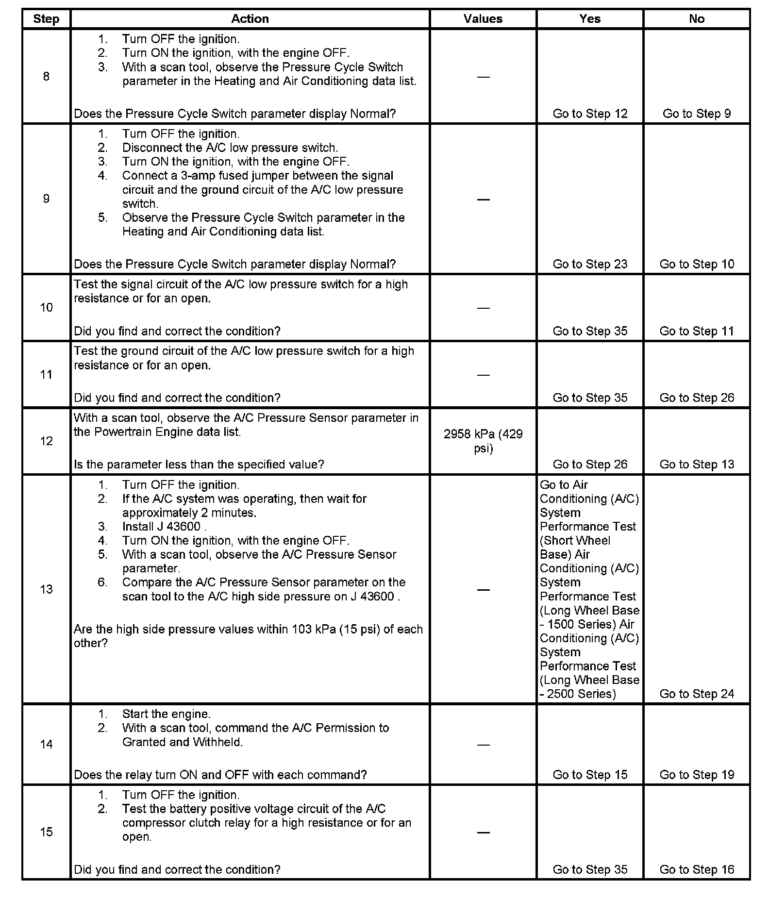
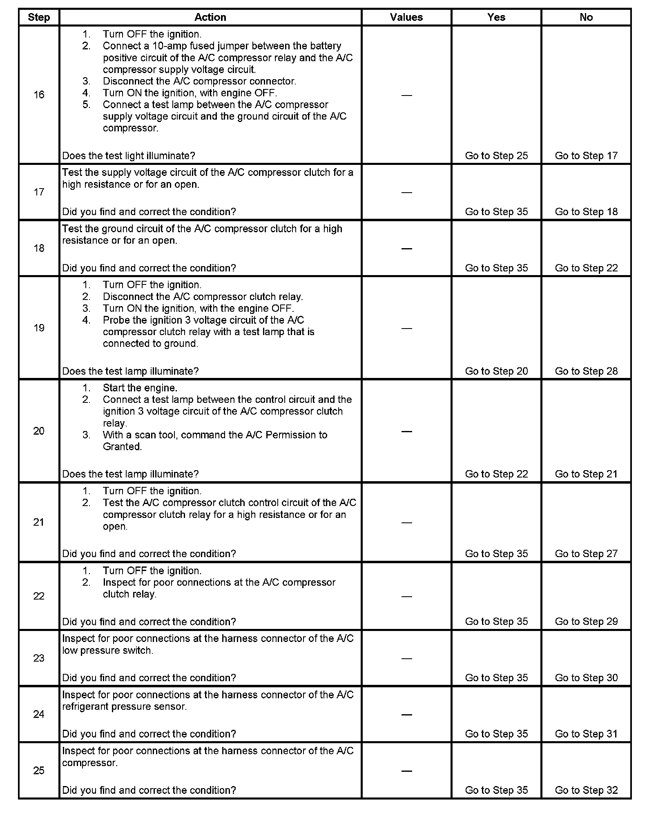
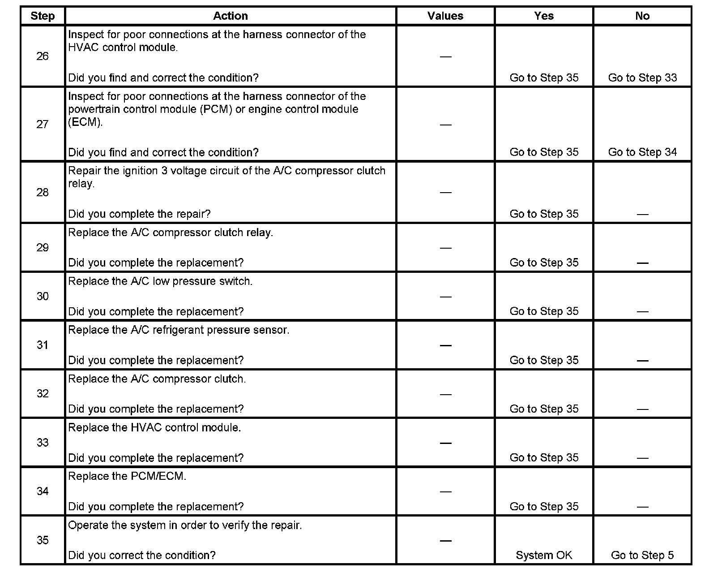

Compressor Clutch Does Not Engage
HVAC COMPRESSOR CLUTCH DOES NOT ENGAGE
DIAGNOSTIC AIDS
A/C compressor clutch will not engage under the following conditions:
- The A/C high side line pressure is over 2957 kPa (429 psi).
- The A/C low side line pressure is under 138-172 kPa (20-25 psi).
- Throttle angle is at 100 percent.
- Engine speed is more than 5,500 RPM.
- Engine coolant temperature (ECT) is more than 121°C (250°F).
- Ambient air temperature is less than 5°C (40°F).
- Engine is idling at a low unstable RPM
Compressor clutch engagement cannot be used to determine status of the low pressure switch. The low pressure switch is one of several inputs to the HVAC control module for A/C request authorization. A/C request is one of several inputs to the powertrain control module (PCM) that control A/C compressor clutch engagement.
To accurately determine what pressure the A/C low pressure switch opens and closes at use Kent Moore GE-47742 which will allow the technician to measure the switch point pressure at the switch.
Using a scan tool, monitor the "low pressure switch" status while monitoring the "low side" pressure at the switch to determine the switch points of the low pressure switch.
The low pressure switch "connector seal" must be removed before plugging it into the switch for testing. The "plunger effect" of plugging the connector with seal into the switch induces a pressure on the back side of the switch, this pressure will skew the opening/closing characteristics of the switch 5-10 psi until the pressure bleeds off. The time required for the connection induced pressure to bleed off can take 20 minutes or longer.
TEST DESCRIPTION
Step 1 - Step 7:
Step 8 - Step 15:

Step 16 - Step 25:

Step 26 - Step 35:

The numbers below refer to the step numbers on the diagnostic table.
2. The A/C compressor output is disabled if the engine is idling at a low unstable RPM.
3. The A/C compressor relay output is disabled if engine coolant temperature is above 121°C (250°F). The engine coolant indicator will illuminate at this temperature.
4. This step ensures that the HVAC control module is receiving an input from the A/C switch.
5. These actions will enable the A/C compressor to operate.
6. This test ensures that there is sufficient refrigerant in the A/C system. The specific values come from the A/C System Performance Test.
8. The A/C Low Pressure Switch parameter is out of range when the HVAC control module interprets the signal being below 138-172 kPa (20-25 psi).
9. This action will simulate a closed switch condition. If the Pressure Cycle Switch parameter reads Low Pressure than there is a circuit condition or a condition with the HVAC control module.
12. The A/C compressor relay output from the PCM is disabled if the A/C high side system pressure is interpreted to be higher than 2 958 kPa (429 psi).